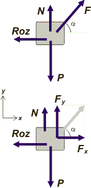

| |
NO ME SALEN
PROBLEMAS RESUELTOS DE FÍSICA DEL CBC
Rozamiento |
|
|

|
| |
dN2.36 - Se desea arrastrar una caja por un plano horizontal tirando con una cuerda y con el mínimo esfuerzo. La caja presenta rozamiento dinámico con el plano de coeficiente μ. ¿Cuál será el ángulo indicado para lograr el cometido?
NOTA: este ejercicio se resuelve haciendo uso de conocimientos de análisis matemático. |
|
| Este interesante ejercicio es de cosecha propia, espero que te guste. Lo primero que tenemos que hacer es entender correctamente de qué se trata y qué es lo que nos piden. Hagamos un DCL. |
|
|
|  |
Ahí tenemos la caja siendo arrastrada por nuestra fuerza F, que forma un ángulo con el desplazamiento, α.
Las fuerzas que actúan son: el peso de la caja, P, el apoyo sobre el plano, N, el rozamiento, Roz y la fuerza para arrastrarla, F.
Nuestra fuerza habremos de descomponerla en las direcciones horizontal y vertical:
Fx = F cos α
Fy = F sen α
Las ecuaciones de Newton dicen:
Fx — Roz = m . a
N + Fy — P = 0
|
|
|
|
Por otro lado, sabemos que:
Roz = μ N
Se entiende que si queremos un esfuerzo mínimo (F mínimo) la aceleración ha de ser nula (con mayor fuerza se obtiene aceleración distinta de cero, que no nos interesa ya que no queremos aumentar la velocidad ni tampoco que la caja se frene).
Pero también hay una incidencia del ángulo: cuanto menor es el ángulo, mayor es la efectividad de la componente horizontal que es la que efectivamente arrastra la caja, pero menor es la componente vertical que disminuye la fuerza del apoyo y por lo tanto aumenta el rozamiento que frena la caja. Y viceversa: cuanto mayor sea el ángulo menor es el frenado, pero también menor es la fuerza de arrastre. Habrá un ángulo que maximice el efecto del arrastre y minimice el esfuerzo. Ése es el ángulo que buscamos.
Combinemos las ecuaciones y despejemos F.
F cos α = Roz
F cos α = μ N
F cos α = μ ( P — F sen α )
F cos α = μ P — F μ sen α
F cos α + F μ sen α = μ P
F ( cos α + μ sen α ) = μ P
En definitiva: |
|
|
|
|
|
Acá vemos que el valor mínimo de F lo obtendremos cuando el denominador de la expresión anterior sea máximo. Para hallar ese valor máximo haremos uso de la propiedades de las derivadas.
La función:
f(α) = cos α + μ sen α
adquiere un máximo cuando su derivada se anula. Derivemos:
f'(α) = — sen α + μ cos α
Igualémosla a 0.
— sen α + μ cos α = 0
μ cos α = sen α
μ = tg α
Esto quiere decir que cuando el ángulo con que se tira de la caja sea tal que su tangente es igual al coeficiente de rozamiento, entonces, la fuerza con que se tira será el mínimo necesario para lograr el arrastre. Por lo tanto: |
|
|
|
|
|
| Por ejemplo, supongamos que el coeficiente de rozamiento vale 0,25, entonces te conviene tirar de la soga con un ángulo de 14˚, así el esfuerzo de mover la caja será menor. |
|
|
| DESAFIO: Verificá que para el ejemplo que acabo de dar (μ = 0,25 y α = 14˚) la fuerza F es mínima. |
|
 |
| Algunos derechos reservados, otros no.
Se permite su reproducción citando la fuente. Última actualización jul-19. Buenos Aires, Argentina. |
|
|
|